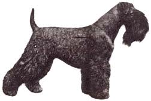

<table border="0" class="layout">
    <colgroup span="1"><col width="25%" span="1"></col><col width="75%" span="1"></col></colgroup> 
    <tbody>
        <tr>
            <td valign="top">
                <div class="holster">
                    <div class="block_container s3 b-text b-static-text user_css_12816005438" id="e_127779623637">
                        <p><em><strong></strong></em></p>
                        
                    </div>
                    <div class="block_container s3 b-image txt-center" id="e_1282670307663"><span></span></div>
                </div>
            </td>
            <td>
                <div class="holster">
                    <div class="block_container s3 b-text b-static-text user_css_12816005438" id="e_128267021260">
                        <p style="text-align: center;"><span style="color: #0000ff;"><strong>Керри Блю Терьер</strong></span></p>
                        <p style="text-align: justify;"><span style="color: #006600;"><span style="color: #0000ff;"><strong>Из истории породы:</strong> керри-блю-терьер, или ирландский голубой терьер - национальная собака Ирландии. Её прошлое окутано тайной. Есть предположение, что предки керри-блю-терьера - испанские собаки, попавшие на побережье Ирландии после разгрома "Непобедимой армады" в 1588 году. Другие специалисты считают, что керри-блю-терьер ведёт своё происхождение от гораздо более крупного ирландского волкодава. Не исключено, что все предки керри-блю-терьера - коренные "ирландцы". Во всяком случае, ещё в 18 веке керри-блю-терьеров использовали на этом острове как бойцовых, охотничьих, пастушьих и сторожевых собак. Позднее им, вероятно, прилили кровь денди-динмонтов и бедлингтон-терьеров. В 1922 году керри-блю-терьеры дибютировали на выставках в Англии, а два года спустя породу официально признал и Американский клуб собаководства. В России эта порода появилась в 1970-х годах. </span></span></p>
                        <p style="text-align: justify;"><span style="color: #006600;"><span style="color: #0000ff;"><strong>Общая характеристика:</strong> собаки подвижные, энергичные, чуткие, умеренно злобные, отважные, хорошо поддаются дрессировке. Для этой породе характерна общая собранность. Керри - добродушные и преданные, не лишенные, однако, некоторого упрямства. Он привязывается к детям, но может быть раздражительным и вспыльчивым и поэтому с щенячьего возраста требует доброжелательного, хотя и строгого обращения. </span></span></p>
                        <p style="text-align: justify;"><span style="color: #006600;"><span style="color: #0000ff;"><strong>Содержание и уход:</strong> выведенная когда-то для работы, эта собака нуждается в хорошем выгуле. Ежедневно пользуйтесь жесткой щёткой и металлическим гребнем. Нетрудно научится самому тримминговать обычными ножницами своего питомца. Но если вы собираетесь выставить свою собаку, необходимо потратить массу времени на подготовку.</span></span></p>
                        <p style="text-align: justify;"><span style="color: #006600;"><span style="color: #0000ff;"><strong>Размеры:</strong> рост 46-48 см (кобели), суки чуть меньше. Вес 15-17 кг.</span></span></p>
                        <p style="text-align: justify;"><span style="color: #006600;"><span style="color: #0000ff;">_____________________________________________</span></span></p>
                        <p style="text-align: justify;"> </p>
                    </div>
                </div>
            </td>
        </tr>
    </tbody>
</table>​
